Ensō: A Streaming Interface for NIC-Application Communication
This page was written by an AI model to give a high-level overview of the paper. Please check the paper for detail: USENIX.
Network link speeds have grown from 100 Mbps to 100 and 200 Gbps while CPU single-core performance has stopped scaling at the same rate, so the question of whether software can keep up with the NIC matters more each generation. The paper's starting observation is that even with kernel-bypass libraries and NIC offloads, utilizing a 100 Gbps link is still hard, and the reason is not the CPU but the decades-old interface between the NIC and software itself. Nearly every NIC, including 40 of the 44 drivers in DPDK, exposes a packetized interface: every unit of communication is a fixed-size packet buffer (a 1536 B Linux sk_buff or a 2 kB DPDK mbuf) paired with a descriptor carrying metadata such as size and a pointer. Software pre-allocates a pool of these buffers, and the NIC DMAs each arriving packet into whichever one is free, so consecutive packets can land anywhere in memory.
This design made sense when NICs did little and software had to multiplex packets to many destinations itself. It fits poorly with how NICs and software are used today. Modern NIC offloads, such as TCP Segmentation Offload, Large Receive Offload, and serialization offloads, naturally produce or consume data that spans multiple packets, forcing software to split and recombine data across packet buffers. And because packets scatter across memory, reads and writes defeat the CPU's hardware prefetcher: the paper measures a single-core, 100 Gbps Intel E810 forwarding small packets getting only 40 Gbps, backend-bound with a 55% L2 cache miss ratio. Per-packet descriptors also consume PCIe bandwidth that carries no payload: up to 39% of read bandwidth on that same setup, which keeps the NIC from scaling past two CPU cores.
Ensō's fix is to drop the packet buffer and the descriptor altogether. The NIC and software instead share an Ensō Pipe: a ring buffer of raw, contiguous bytes that either side appends to, with no fixed record size and no structure imposed on the data. Because an Ensō Pipe is opaque, it can carry raw packets, reassembled application messages, or an unbounded bytestream, depending on what the NIC and the application agree on.
With no in-band metadata, the NIC and software cannot use an in-line flag bit to signal new data, so Ensō adds a separate notification buffer that only ever carries a tail-pointer update, aggregating many bytes of arrived data into one notification. To avoid wasting bandwidth on notifications sent too often or stalling software by sending them too rarely, Ensō sends notifications reactively: a new notification is suppressed until the buffer transitions from empty to non-empty, or until software's own pointer update shows it has drained the data it already knew about. An optional notification-prefetching mode trades a few extra notifications for lower tail latency.
Implemented on a Stratix 10 MX FPGA SmartNIC with 100 Gbps Ethernet, a single Ensō core saturates the link at minimum packet size (148.8 Mpps), something a DPDK-based E810 setup cannot do even with eight cores (it tops out around 88 Mpps at two cores and becomes PCIe-bound beyond that). Ensō's PCIe metadata overhead stays under 1.2% of bandwidth, versus up to 39% for the E810. Across four real applications (Maglev, a NitroSketch-based telemetry tool, the MICA key-value store, and a Fail2ban-style log monitor) Ensō improves throughput by 1.5 to 6x and cuts latency by up to 43%, and it still outperforms a zero-copy DPDK baseline even for workloads that force Ensō itself to copy packets.
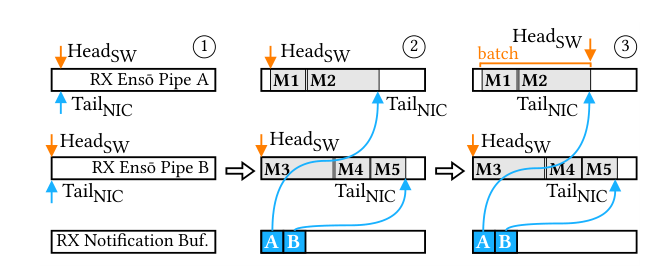
Key takeaways
- The packetized NIC interface (fixed-size packet buffers plus per-packet descriptors) causes chaotic, scattered memory accesses and wastes PCIe bandwidth on metadata, up to 39% of read bandwidth in the paper's measurements.
- Ensō replaces descriptor rings and packet buffers with the Ensō Pipe, a data ring buffer that the NIC and software append arbitrary-sized chunks to directly, restoring sequential memory access.
- A separate notification buffer, updated reactively rather than per packet, lets the NIC tell software about new data without embedding control bits in the data itself and without the two sides contending for the same cache line.
- Prototype on a Stratix 10 MX FPGA NIC: single-core Ensō saturates 100 Gbps at 64 B packets (148.8 Mpps), versus an E810-with-DPDK baseline that cannot scale past roughly 88 Mpps.
- Across four applications (Maglev, a telemetry sketch, MICA, a log monitor), Ensō delivers 1.5 to 6x throughput and up to 43% lower latency, even outperforming zero-copy DPDK when Ensō itself must copy packets.
From descriptor rings to a shared byte stream
The packetized interface and its costs, the Ensō Pipe, notification design, and the hardware and software that implement it.
1 · The packetized NIC interface
In a packetized interface, the NIC and software coordinate through descriptor ring buffers. Before receiving, software posts descriptors in the RX ring that point to pre-allocated packet buffers, usually sized to fit an MTU-sized packet (1536 B for Linux sk_buff, 2 kB for DPDK's default mbuf). The NIC DMAs each incoming packet into the next available buffer, writes the packet's size into the descriptor, and sets a flag bit so software knows the slot is valid. Transmission is symmetric, with the flag now signaling that the NIC has sent the packet. Because every packet gets its own buffer, buffers are not necessarily adjacent or sequential in memory.
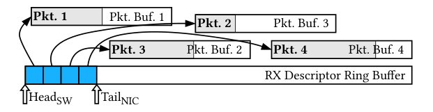
This design let a single piece of software (the kernel, or a software switch) efficiently multiplex and demultiplex packets to many destinations just by passing around pointers. Modern deployments usually skip that step: high-performance NICs expose thousands of hardware queues and handle demultiplexing themselves (RSS, Flow Director, Azure AccelNet), so each application thread talks to the NIC directly and gets no benefit from the packetized interface's multiplexing design, only its overheads.
2 · What the mismatch costs
The paper isolates two costs with microbenchmarks on a DPDK-based ping/pong forwarder using a 100 Gb Intel E810 and one 3.1 GHz core. First, chaotic memory access: scattering packets across memory defeats hardware prefetching, producing a 6% L1d and 55% L2 miss ratio and capping throughput at 40 Gbps. Second, metadata overhead: because every packet also needs a descriptor, up to 39% of PCIe read bandwidth is spent moving metadata rather than packet data, and this fraction does not improve with faster PCIe generations because NIC bandwidth and PCIe bandwidth are growing in lockstep. Together these effects stop the E810 from scaling throughput past two CPU cores in the paper's tests.
3 · The Ensō Pipe
An Ensō Pipe is a ring buffer that holds raw data instead of descriptors. Software and the NIC coordinate access with four pointers: HeadSW and TailNIC for an RX pipe, HeadNIC and TailSW for a TX pipe. To receive, the NIC DMAs incoming data directly into the next free bytes of the pipe and advances TailNIC; software reads the data in place and advances HeadSW once it is done, freeing that space for reuse. Because a pipe is opaque, it can be mapped to any pinned memory in the application's address space. Pairing an RX and a TX pipe over the same memory region lets applications that modify data in place and send it back (most network functions) avoid a copy entirely; separate RX and TX pipes suit request-response applications that build a new response.
4 · Coordinating without per-packet flags
Packetized interfaces signal arrivals with an in-line flag bit in each descriptor, which Ensō cannot do since it imposes no format on pipe contents. The paper rejects two simpler alternatives: periodic MMIO reads stall the CPU and are serialized by PCIe, and writing the tail pointer to a fixed shared-memory address causes the CPU and NIC to repeatedly fight over the same cache line, measured at under 5 Gbps throughput. Ensō instead uses a dedicated notification buffer, separate from the data pipe, whose entries carry a pipe ID, the latest TailNIC, and a flag bit that software polls instead of polling the data pipe itself.
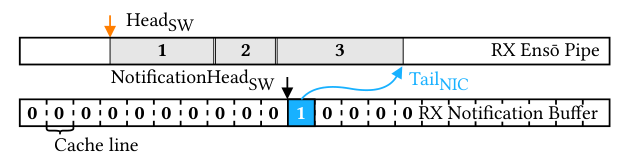
Multiple Ensō Pipes can share one notification buffer (each entry tags its pipe ID), so a single thread managing several pipes polls one location. Each thread can also get its own notification buffer to avoid cross-thread synchronization, and each application is restricted to its own pipes and notification buffers via per-queue page-aligned MMIO regions that the kernel maps into the requesting process.
5 · Pacing notifications reactively
Sending a notification for every arrival wastes bandwidth and CPU cycles; sending too few risks leaving a core idle. Ensō's reactive scheme keeps a single status bit per pipe (initialized to empty). On a new arrival, the NIC only sends a notification if the pipe was previously empty; otherwise it assumes software already knows more data is coming. When software advances its head pointer, the NIC checks whether the pipe is now empty (resetting the status bit silently) or still has unread data the software hasn't been told about (triggering a fresh notification). The notification rate this produces adapts automatically: a slow consumer gets few notifications as data piles up, and a fast consumer, which updates its head pointer often, gets notified promptly.
The cost of this scheme is a possible extra PCIe round trip of latency: if data arrived after the last notification but software has already caught up to what it was told, it must wait for the next notification. Ensō addresses this with an optional notification prefetching mode, in which software explicitly (or, in a compiled low-latency mode, automatically) requests a notification for the next pipe while still processing the current one, trading roughly double the notification traffic at high load for removing that extra wait.
6 · Scaling to many pipes, threads, and applications
- Within one thread: several Ensō Pipes share a notification buffer, tagged by pipe ID, so one thread polls a single location for updates from all of them.
- Across threads: each thread can use its own notification buffer and set of pipes, avoiding locks or atomics between threads.
- Across applications: each queue's pointer registers live in a dedicated page-aligned block of memory that the kernel maps only into the application that requested that pipe, isolating access.
7 · Hardware implementation
The FPGA NIC's RX datapath (built from per-pipe "Ensō Pipe Managers" that track each pipe's buffer address, head and tail pointers and status bit, a notification buffer manager, and a DMA engine) processes metadata at 250 MHz. Each Ensō Pipe Manager needs two cycles per unit of metadata, so at least two managers (of up to 16 configured by default) are needed to sustain 148.8 Mpps at 100 Gbps; the notification buffer manager needs only one manager as long as at least 20% of requests can have their notifications suppressed, which reactive notification easily achieves. The default configuration supports 128 notification buffers (one per core is typical) and can be built with up to 1024.
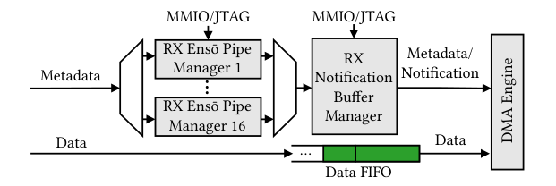
The TX datapath mirrors this with a notification buffer manager that issues DMA reads for pending transmit data, a completion monitor that tracks in-flight requests and writes back completion notifications, and a configurator that applies software's control-plane requests (such as installing a new flow-table entry for a newly created pipe).
8 · Software and how to use Ensō depending on NIC features
The software stack is a userspace library plus a kernel module: applications request notification buffers and Ensō Pipes through the library, which asks the kernel to check permissions, allocate the resources on the NIC, and map them into the application's address space. To keep the "unbounded buffer" abstraction consistent at the physical wraparound point, each pipe's memory is mapped twice, consecutively, into the application's virtual address space, so a read or write that crosses the buffer boundary still sees contiguous bytes; the library handles splitting a transmission that wraps around into multiple underlying transfers.
How an application should use Ensō depends on what the NIC already offloads: with simple offloads (checksum, RSS) software exchanges raw packets through a pipe, much like today, except largely without copies; with transport offloads (TCP, SCTP, Homa-style transports) the NIC can deliver whole messages or a reassembled bytestream directly; and with application-logic-aware NICs, pipes can carry application-level requests, such as full HTTP requests, straight to a run-to-completion handler. Applications that must multiplex or demultiplex data out of arrival order, such as virtual switches, need one extra memory copy with Ensō; Section 4 of the Evaluation tab covers how that copy affects performance in practice.
Evaluation
Microbenchmarks isolating each design decision, then four application case studies.
The authors synthesize Ensō on an Intel Stratix 10 MX FPGA NIC (100 Gb Ethernet, PCIe 3.0 x16, most logic at 250 MHz) and compare it against an Intel E810 NIC (100 Gb Ethernet, PCIe 4.0 x16) driven by DPDK, chosen to minimize software overhead on the baseline. Both sit in a server with an Intel Core i9-9960X (16 cores, 3.1 GHz base, 22 MB LLC, PCIe 3.0), with dynamic frequency scaling, hyper-threading, and power management disabled and cores isolated from the scheduler. Because no existing software packet generator could keep up with Ensō, the authors built EnsōGen, which replays a pcap file and can saturate 100 Gbps with a single core; it runs on a separate generator machine (Intel Core i7-7820X, 8 cores, 3.6 GHz, 11 MB LLC) connected back to back.
| What | Value in the paper |
|---|---|
| DUT NIC | Intel Stratix 10 MX FPGA, 100 Gb Ethernet, PCIe 3.0 x16, 250 MHz core logic |
| Baseline NIC | Intel E810, 100 Gb Ethernet, PCIe 4.0 x16, driven by DPDK |
| Host / generator | Core i9-9960X (16 cores, 3.1 GHz, 22 MB LLC) / Core i7-7820X (8 cores, 3.6 GHz, 11 MB LLC) |
| Microbenchmark workloads | EnsōGen-generated echo/ping-pong traffic, CAIDA 2016 trace (avg. 462 B) |
| Applications | Maglev load balancer, NitroSketch-based telemetry, MICA key-value store, Fail2ban-style log monitor |
| Metrics | Zero-loss throughput (RFC 2544, median of 10 runs), RTT (5 ns hardware timestamping, median and 99th pctl.), PCIe bandwidth (PCM), CPU counters (perf) |
A single Ensō core saturates 100 Gbps at minimum packet size
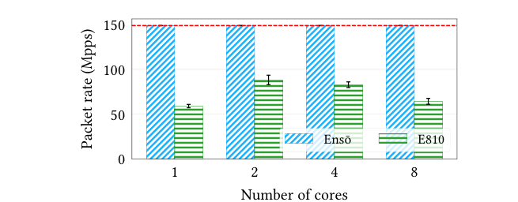
What it shows. Packet rate (Mpps) versus number of CPU cores for an echo server that increments a payload byte and sends the packet back, comparing Ensō to a DPDK-based E810 implementation. Even with one core, Ensō reaches 148.8 Mpps, the 100 Gb Ethernet limit (dashed line). The E810 reaches 59 Mpps with one core and peaks at 88 Mpps at two cores, after which throughput falls as the system becomes PCIe-bound and drops packets.
What to take from it. Ensō's bottleneck for this workload is the physical link, not software; the E810's bottleneck is PCIe metadata overhead (quantified in Result 4), which caps it well below line rate regardless of added cores.
Ensō still wins even when it has to copy packets
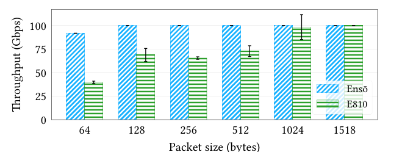
What it shows. Throughput versus packet size (64 to 1518 B) for a single-core forwarding application that swaps MAC addresses: the Ensō version copies each packet to a different TX pipe (since it is not a pure in-place modify-and-return), compared against a zero-copy DPDK implementation on the E810. At 64 B, Ensō reaches 91.7 Gbps versus 39.6 Gbps for the E810, and at larger sizes Ensō reaches line rate. On a CAIDA trace (avg. 462 B), Ensō achieves 92.6 Gbps versus 72.6 Gbps for the zero-copy E810.
What to take from it. The packetized interface's own overhead can exceed the cost of an extra memory copy. This matters for applications like virtual switches that must multiplex and demultiplex data (requiring a copy under Ensō's model), since the paper's result suggests they may still be better off on Ensō than on a zero-copy packetized interface.
Sequential memory layout, not reduced software work, drives the cache improvement
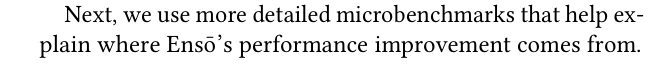
What it shows. Throughput, packet rate, and L1d/L2/LLC miss counts for Ensō, "Chaotic Ensō" (a variant that deliberately scatters where each message lands, with identical software overhead to Ensō), and the E810, all running the same receive-and-increment workload. Ensō reaches 100.0 Gbps / 148.8 Mpps with a 0.2% L1d and 9% L2 miss ratio. Chaotic Ensō drops to 38.0 Gbps / 56.5 Mpps with a 14% L1d and 68% L2 miss ratio, an order of magnitude more L1d and L2 misses than Ensō despite processing fewer packets. The E810 reaches 41.1 Gbps / 61.1 Mpps with a 6% L1d and 55% L2 miss ratio. LLC misses are negligible for all three.
What to take from it. Because Chaotic Ensō has the identical code path and software overhead as Ensō, and still performs worse than the packetized E810, the comparison isolates memory layout, not reduced instruction count, as the source of Ensō's cache and throughput advantage.
Ensō nearly eliminates PCIe metadata overhead
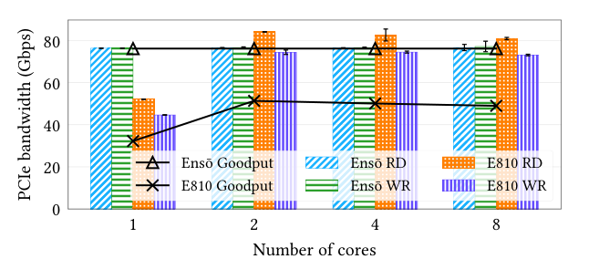
What it shows. PCIe read (RD) and write (WR) bandwidth utilization (bars) and goodput, i.e. bandwidth carrying actual packet data (lines), versus core count, for a 64 B echo-server workload sent at line rate (not limited to zero-loss, so software-side drops do not mask the PCIe numbers). With one core the E810 is CPU-bound and drops packets, lowering both goodput and bandwidth; beyond two cores it becomes PCIe-bound, using up to 84.1 Gbps of read bandwidth (near the 85 Gbps theoretical PCIe Gen3 x16 limit for 64 B transfers), of which up to 39% is metadata rather than payload. Ensō's metadata overhead stays below 1.2% of PCIe bandwidth across all core counts; its write bandwidth rises slightly with more cores (76.4 to 77.2 Gbps) as faster software consumption triggers more frequent reactive notifications.
What to take from it. Even though the E810 moves less actual data (lower goodput) than Ensō, it consumes more PCIe bandwidth overall because so much of it is metadata; this is the direct mechanism behind Ensō's scaling advantage in Result 1.
Reactive notifications sustain twice the load of per-packet notifications
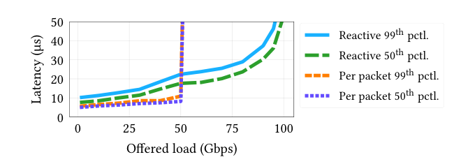
What it shows. Median and 99th-percentile RTT versus offered load for an echo server using Ensō's default reactive notifications compared to a variant that sends one notification per packet, with notification prefetching disabled in both. Reactive notifications sustain up to 100 Gbps of offered load; the per-packet variant can sustain only up to 50 Gbps. Reactive notifications do add some latency as load increases.
What to take from it. Batching notifications by suppressing redundant ones is necessary, not just an optimization: without it, the notification channel itself becomes the throughput bottleneck well before the Ethernet link does.
Notification prefetching closes Ensō's latency gap at high load
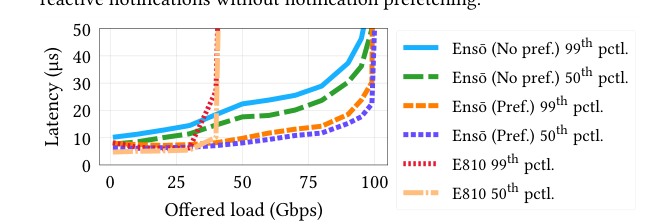
What it shows. Median and 99th-percentile RTT versus offered load for Ensō with and without notification prefetching, alongside the E810 with DPDK. Enabling prefetching (which requests the next pipe's notification while still processing the current one) significantly reduces Ensō's latency at high load, bringing it in line with the E810, while Ensō continues to sustain up to 100 Gbps of offered load.
What to take from it. The latency cost of reactive notifications identified in Result 5 is optional and fixable: applications that care more about tail latency than about the extra notification traffic can enable prefetching, at compile time or per call, without giving up Ensō's throughput advantage.
Maglev load balancer: up to 6x throughput on one core
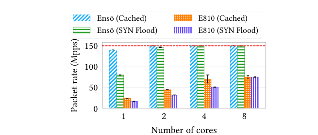
What it shows. Packet rate versus core count for a reimplementation of Google's Maglev load balancer, under two 64 B-packet workloads: "cached" (16 flows, always hitting the consistent-hashing flow cache) and a SYN-flood workload (always missing it). With one core, Ensō reaches 138 Mpps on the cached workload (about 6x the E810's 23 Mpps) and 79 Mpps on the SYN-flood workload (about 5x the E810's 16 Mpps). At four cores, Ensō becomes Ethernet-bottlenecked on both workloads; at eight cores, the DPDK implementation becomes PCIe-bottlenecked.
What to take from it. Maglev is motivated by load-balancing small requests, so it is close to the raw-packet-rate microbenchmarks; the speedup here (up to 6x) represents close to the best case the paper reports, since Maglev does little per-packet compute beyond the hash lookup.
MICA key-value store: smaller but consistent gains once compute dominates
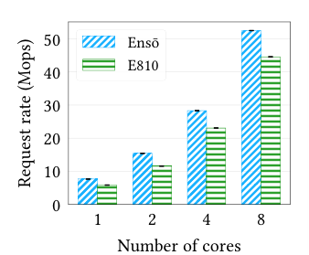
What it shows. MICA throughput (millions of operations per second) versus core count, for 8 B key/value ("tiny") requests, 50% GET with uniform key popularity, using the same throughput and latency methodology as the original MICA paper. Ensō improves throughput by 31% with one core, 33% with two, and 23% with four; at eight cores the bottleneck shifts to memory and the gap narrows. Latency (reported separately in the paper, not shown here) drops by up to 8 µs (43%) at one core and up to 6 µs (36%) at four cores before queuing delay dominates. For larger requests, the paper reports up to 29% improvement for a "small" (16 B key / 64 B value) configuration and up to 12% for a "large" (128 B key / 1024 B value) configuration.
What to take from it. MICA does significantly more compute and memory work per request than Maglev, so DPDK's I/O overhead is a smaller fraction of total time; Ensō's improvement shrinks accordingly, illustrating that the interface's benefit scales with how I/O-bound the application is.
FAQ
Q·What exactly is wrong with today's NIC interface?▾
Almost every NIC requires software to exchange fixed-size packet buffers plus a descriptor per packet. Packets end up scattered across memory (hurting cache and prefetcher behavior), and every packet needs its own metadata transferred over PCIe (wasting bandwidth, up to 39% of read bandwidth in the paper's measurements). Neither cost is inherent to moving packets; both come from this particular interface design.
Q·Why not just fix this with bigger buffers or batching multiple packets per descriptor?▾
The paper does not evaluate that specific alternative directly, but it notes that related proposals like Multi-Packet Receive Queue still require a NIC notification per packet arrival, so they reduce PCIe read overhead but not write overhead. Ensō's approach removes descriptors altogether rather than trying to amortize them.
Q·What exactly is an Ensō Pipe?▾
A ring buffer that the NIC and software both append raw bytes to directly, with head and tail pointers but no fixed record boundaries or inline metadata. It can hold raw packets, reassembled messages, or an unbounded bytestream; the format is decided by the application and whatever offloads the NIC provides, not by the interface itself.
Q·If there's no per-packet flag bit anymore, how does software know new data arrived?▾
A separate notification buffer carries just a tail-pointer update and a flag per entry, tagged with which pipe it refers to. Software polls this small, dedicated buffer instead of polling inside the data pipe, which keeps the arrival signal decoupled from the data format.
Q·Why not just have the NIC write the tail pointer to a known memory address and have software poll that?▾
The authors tried this and measured under 5 Gbps throughput, because the CPU and NIC end up repeatedly fighting over ownership of the same cache line every time either one touches it. The dedicated notification buffer, combined with batching, avoids this contention.
Q·What is a "reactive" notification, and why not notify on every packet?▾
Notifying on every packet wastes PCIe bandwidth and only sustains up to 50 Gbps in the paper's test, versus 100 Gbps with reactive notifications. Reactive notifications are sent only when a pipe transitions from empty to having data, or when software's own pointer update reveals it still has unread data; this makes the notification rate track how fast software is actually consuming data rather than the raw packet rate.
Q·Doesn't delaying notifications hurt latency?▾
It can add up to roughly one PCIe round trip in the worst case, if data arrived after the last notification but software has already caught up. Ensō's notification prefetching mode lets software request the next notification ahead of time, which the paper shows brings latency back down to match the baseline E810 while still sustaining full throughput.
Q·Does an application need to be rewritten from scratch to use Ensō?▾
The paper's applications (Maglev, a telemetry sketch, MICA, a log monitor) reuse the same processing logic for both the DPDK and Ensō versions, changing only the wrapper code that sends and receives data. The amount of change needed depends on whether the application processes data strictly in arrival order (straightforward) or needs to reorder or multiplex it (needs an extra copy).
Q·What about applications like virtual switches that multiplex and demultiplex packets out of order?▾
These need an extra memory copy under Ensō, since the streaming model assumes in-order processing. Surprisingly, the paper's packet-forwarding benchmark shows Ensō with a copy still beating a zero-copy DPDK implementation on the E810 (91.7 Gbps versus 39.6 Gbps at 64 B), because the packetized interface's own overhead outweighs the cost of the copy.
Q·Is this only useful on custom FPGA hardware, or could real NICs adopt it?▾
The prototype targets an FPGA SmartNIC, but the paper states the same design could be implemented as an ASIC. The hardware itself is intentionally simple: per-pipe state tracking, a notification manager, and a DMA engine, built to require little NIC-side state and to parallelize easily.
Q·How does Ensō keep multiple applications or threads from interfering with each other?▾
Each thread can use its own Ensō Pipes and notification buffer to avoid synchronization between threads, and each application's pointer registers live in dedicated page-aligned memory blocks that the kernel maps only into the process that requested them, isolating applications from one another.
Q·What's the single most important number to remember from this paper?▾
A single CPU core with Ensō saturates a 100 Gbps link at minimum-sized packets (148.8 Mpps), something the DPDK-based E810 baseline cannot do even with more cores, because it becomes bottlenecked by PCIe metadata overhead (up to 39% of read bandwidth) well before the Ethernet limit.
sk_buff or DPDK mbuf) dedicated to holding exactly one packet's data.